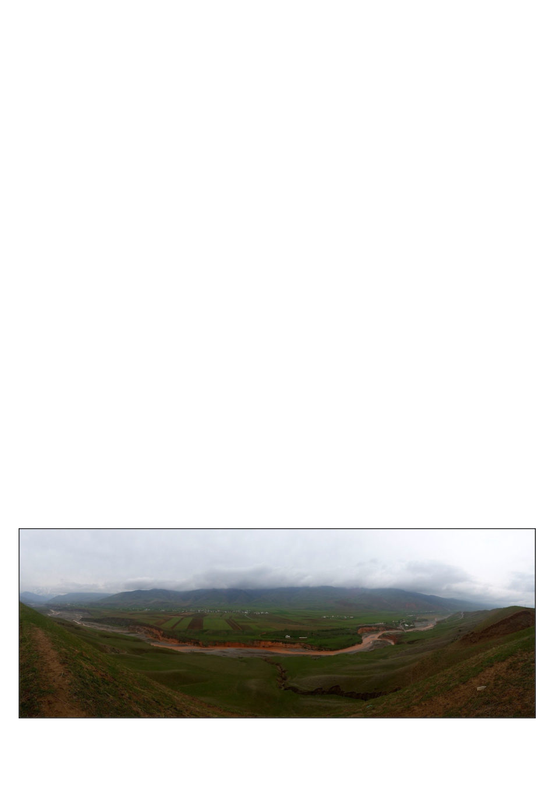

crossbowmen both in your party and watch
the rivalry. Some characters don’t know it
yet but the love of their life awaits them in
some distant place beyond the horizon. And
the slaves too, this was particularly important
to me, have hopes and aspirations. You can
set them free, and they may or may not ask to
join your party as a paid member (if you were
nice to them and they are far from home), but
then also may leave your party if you take
them past their hometown, a place where they
can practice their old profession, or
something else causes them to want to stay.
My Kyrgyzstan article continues
from the previous blockquote:
Once, caravans of snorting
camels had stopped here to prepare to
cross the mountains, but now it is dusty
and post-soviet, full of crumbling
monuments and grey apartment blocks.
A statue of Lenin still graces a central
square, his hand outstretched as if to
say “look upon my works!” but you
turn your back on him and head toward
the mountains, past a prouder, more
modern statue of Kyrgyz folk hero
Manas astride his horse holding his
sword valiantly aloft. Follow the
approximate route of the Silk Road for
two more hours by car up winding
roads surrounded by increasingly large
green hills, occasionally waiting for
shepherds on horseback to move their
sheep off the road, until you come to a
village named Kenesh beside the icy
Kara Darya river.
The river valley seems stark
and empty in the cold of early Spring.
Other than the village and river, there
is nothing in sight but grass and distant
herds of sheep or horses. The
“Mountains of Heaven,” the Tian
Shan, loom at one end, and the
Fergana Valley at the other. The village
itself consists of a smattering of dusty
off-white houses punctuated with
cheery red or blue hand-carved
wooden scrollwork along the eaves.
Each house has its own yard delineated
by a rustic fence of rough branches,
and each yard contains a kitchen
garden, some fruit trees in the very
beginnings of blossom, the family
horses and maybe a cow or two. Some
sheds and barns are actually thatched.
The car rolls into one such yard, I walk
past a row of strangely large beehives
set under some cherry trees
resplendent with pinkish-white
blossoms; I have arrived at my
destination.
I obsessed about the exact routes.
Published maps generally just give vague
swoops of the Silk Road route but a
surprising number of papers detailing very
specific routes in given areas came to light in
obscure hyper specific peer reviewed
journals, and I set up a least-elevation-change
routefinding algorithm to plot between